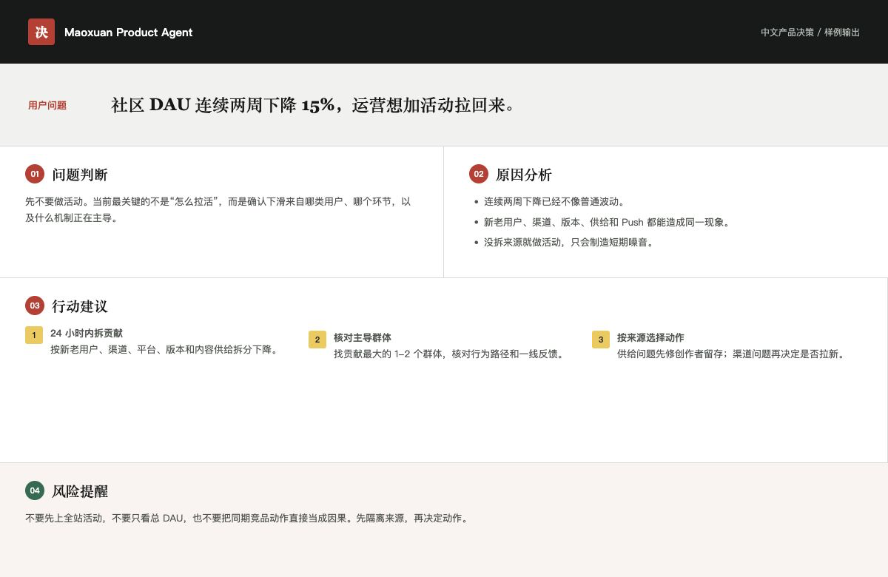

真实案例
DAU 下滑时，先别急着做活动
它不会平均罗列十种办法，而是先判断：当前缺的是动作，还是对问题来源的确认。
“社区 DAU 连续两周下降 15%，运营想加活动拉回来。”

后台推理
蒸馏的是判断动作，不是原文措辞
默认不引用经典、不讲历史，也不做身份扮演。方法只在后台决定该看什么、先做什么、何时换打法。
- 01事实区分数据、行为、反馈与假设
- 02阻塞找到当前最影响结果的问题
- 03机制判断哪一项力量正在主导
- 04行动选择最小、有效、可回滚动作
- 05修正用真实结果更新下一轮判断
从真实材料出发
用户行为 · 业务数据 · 一线反馈找到当前主问题
核心阻塞 · 关键路径 · 资源取舍回到行动中验证
MVP · 灰度 · A/B Test · 数据复盘为什么不是普通 Prompt
先做取舍，再给建议
安装
一分钟，放进你正在使用的 Agent
标准 Agent Skills 目录结构，无服务端、无 API Key、无付费依赖。
一次安装到 Codex、Claude Code 和 Cursor。
npx skills add atdy/maoxuan-product-agent --skill product-decision-agent --agent codex claude-code cursor -g -y
克隆后安装到当前用户的 Agent Skills 目录。
git clone https://github.com/atdy/maoxuan-product-agent.git && cd maoxuan-product-agent && ./scripts/install.sh codex
克隆后安装到 Claude Code 用户级 Skills 目录。
git clone https://github.com/atdy/maoxuan-product-agent.git && cd maoxuan-product-agent && ./scripts/install.sh claude
克隆后安装到 Cursor 用户级 Skills 目录。
git clone https://github.com/atdy/maoxuan-product-agent.git && cd maoxuan-product-agent && ./scripts/install.sh cursor
安装后，直接描述真实问题即可自动触发；也可以显式使用 $product-decision-agent 或 /product-decision-agent。
FAQ
使用前最常问的几个问题
它与《矛盾论》《实践论》到底是什么关系？
后台推理来自对两篇文章完整结构的蒸馏：从事实出发、定位当前核心阻塞、判断主导机制、集中资源、用行动验证，并根据真实结果修正。它不是摘取几个观点后套成 Prompt。
为什么默认不引用原文？
这个项目的目标是解决产品问题，不是教授理论。原文与映射只保留在维护审计中，日常回答全部转换成需求、瓶颈、约束、MVP、灰度、数据验证和组织协作语言。
只适合 Codex 吗？
不是。Skill 遵循标准目录结构，已提供 Codex、Claude Code、Cursor 和通用 Agent Skills 安装方式。前向测试还在全新 Claude Code 会话中验证过真实触发行为。
我需要先学习《毛选》吗？
不需要。你只需提出真实工作问题，例如需求怎么排、留存为什么掉、活动为什么失效、项目延期怎么处理。Agent 会在后台完成判断。
它会替我拍板吗？
它会给出明确建议、行动顺序和切换条件，但不会伪造缺失事实，也不替代用户研究、数据核验、法务判断和最终业务责任。
如何确认它不是一个包装精美的通用 Prompt？
仓库公开了完整方法审计、36 场景测试矩阵、代表性输出、错误样例、四条独立会话前向测试和自动质量门禁。所有结论都可以复查和回归。
下一步